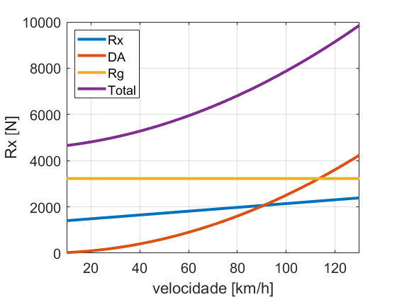
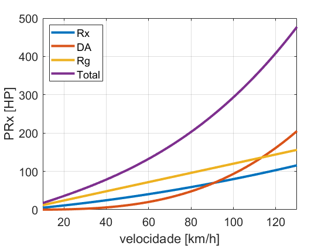

Dinâmica longitudinal - Forças resisitivas - Exercício 4
Forças resistivas.
Fonte: Gillespie Cap4Ex1.
Contents
Parâmetros
m = 32874; % Massa do carro [kg] g = 9.81; % Aceleração da gravidade [m/s2] Ch = 1.0; % Coeficiente da qualidade da pista. rho = 1; % Densidade do ar [kg/m3] Cd = 0.65; % Coeficiente de arrasto [-] A = 10; % Projeção da área frontal [m2] % Faixa de velocidade vKPH = 10:1:130; % Velocidade [km/h] vMPH = vKPH/1.609; % Velocidade [mph] vMS = vKPH/3.6; % Velocidade [m/s] % Rodovia grade = 1; % inclinação da rodovia [%] theta = ones(1,length(vKPH))*atan(grade/100); % Angulação da rodovia [rad]
Forças
% Aerodinâmica DA = 1/2 * rho * Cd * A * vMS.^2; % [N] % Rolamento W = m*g; % [N] fr = (0.0041 + 0.000041*vMPH)*Ch; Rx = fr*W; % [N] % Peso Rg = m*g*sin(theta); % [N] % Total Rtotal = DA + Rx + Rg;
Potência
% Aero PDA = DA.*vMS; % Potência [w] PDAhp = PDA/745.7; % Potência [HP] % Rolamento PRx = Rx.*vMS; % Potência [w] PRxhp = PRx/745.7; % Potência [HP] % Gravidade PRg = Rg.*vMS; % Potência [w] PRghp = PRg/745.7; % Potência [HP] % Total Ptotalhp = PDAhp + PRxhp + PRghp;
Resultado
figure hold on ; grid on ; box on set(gca,'fontsize',15,'xlim',[vKPH(1) vKPH(end)]) plot(vKPH,Rx,'linewidth',3) plot(vKPH,DA,'linewidth',3) plot(vKPH,Rg,'linewidth',3) plot(vKPH,Rtotal,'linewidth',3) xlabel('velocidade [km/h]') ylabel('Rx [N]') legend('Rx','DA','Rg','Total','Location','NorthWest') % print(gcf,'-dpng','dinlonresistivasExercicio4Forca.png') figure hold on ; grid on ; box on set(gca,'fontsize',15,'xlim',[vKPH(1) vKPH(end)]) plot(vKPH,PRxhp,'linewidth',3) plot(vKPH,PDAhp,'linewidth',3) plot(vKPH,PRghp,'linewidth',3) plot(vKPH,Ptotalhp,'linewidth',3) xlabel('velocidade [km/h]') ylabel('PRx [HP]') legend('Rx','DA','Rg','Total','Location','NorthWest') % print(gcf,'-dpng','dinlonresistivasExercicio4Potencia.png') 